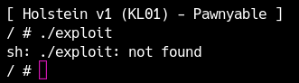
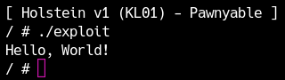
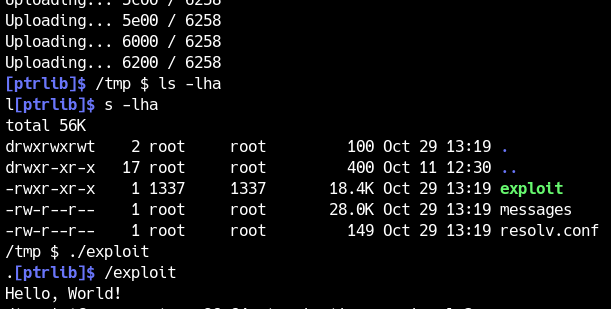

You now have the knowledge needed to begin kernel exploitation, including how to boot and debug the kernel and how its security mechanisms work. Next, we will learn how to write an exploit and run it on qemu.
Execution on qemu
Writing, building, and running an exploit directly on qemu is cumbersome because you must start over whenever the kernel crashes. Instead, build the C exploit locally and then transfer it to qemu.
Entering these commands every time is tedious, so prepare them as a shell-script template. For example, create transfer.sh as follows.
1 |
|
The script simply compiles exploit.c with GCC, adds the resulting binary to a cpio archive, and starts qemu. It uses an archive named debugfs.cpio so that the original rootfs.cpio is not modified, but you may choose another name.
When creating a cpio archive, file permissions change unless you have root privileges, so be sure to run transfer.sh as root.
Put the following code in exploit.c and run transfer.sh.
1 |
|
You will then see an error like the following. Why does this happen?

The distributed image uses a compact library called uClibc instead of the usual glibc. Your local compilation environment uses GCC and glibc, so dynamic linking fails on the target and the exploit does not run.
Therefore, statically link the exploit when running it on qemu.
1 | gcc exploit.c -o exploit -static |
If you change it like this and run it, the program should work.

Executing on a remote machine: using musl-gcc
At this point, you should be able to run an exploit on qemu. The distributed environment has network access, so you can transfer an exploit to qemu with a command such as wget.
Some small CTF environments do not provide network access. In that case, you must transfer the binary using commands available in BusyBox. Base64 is commonly used, but GCC-built files can range from hundreds of kilobytes to tens of megabytes, making the transfer very slow. The large size comes from statically linking functions from the external libc library.
To reduce the size with GCC, you would need to avoid libc and define functions such as read and write yourself using system calls and inline assembly. This is difficult.
For kernel exploitation, many CTF players therefore use a C compiler called musl-gcc. Download it from the link below, build it, and install it.
After installation, replace the compilation command in transfer.sh as follows. Specify the directory where you installed musl-gcc.
1 | /usr/local/musl/bin/musl-gcc exploit.c -o exploit -static |
In the author’s environment, the Hello, World program was 851 KB when built with gcc and 18 KB when built with musl-gcc. To reduce it further, you can remove debug symbols with strip.

Some header files (Linux kernel type) are not in musl-gcc, so you need to set the include path or compile with gcc. In such cases, if you build it via assembly once, you can use gcc functions and reduce the file size.
$ gcc -S sample.c -o sample.S
$ musl-gcc sample.S -o sample.elf
Once this is complete, write a script that transfers the binary to a remote host over nc using base64. You will use this uploader repeatedly in CTFs, so it is a good idea to keep your own template.
1 | from ptrlib import * |
After a short while, the upload should complete as shown below.

For the exercises on this site, you can run everything locally, so you do not need the uploader. Remember it when practicing in a CTF or another remote environment.